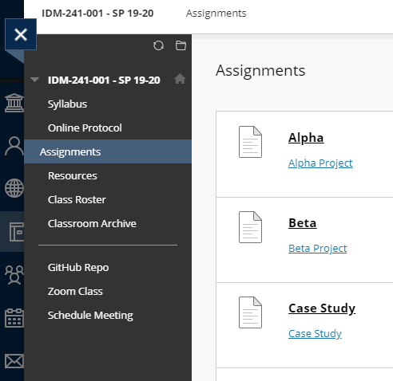

IDM241-mar528-ALPHA, Lillian Raphael
URL
https://learn.dcollege.net/ultra/course
ABOUT
The microinteraction I want to improve is the navigation sidebar when the user is viewing a course’s content in BBlearn.
TRIGGERS
In the “Courses” page, the user clicks on any of their registered courses. The course’s content then slides in from the right, and on the left there lies the navigation sidebar that I want to improve. If the user hovers their mouse to the right of the navigation sidebar, a hide/show toggle button appears, which when clicked hides/shows the navigation sidebar.
RULES
The hide/show toggle button is always visible. If the navigation menu is hidden, and the user clicks the hide/show button, the navigation menu slides in from the left into view. If the navigation menu is shown, and the user clicks the hide/show button, the navigation menu slides out from the view. The hide/show button has an arrow icon pointing right if the navigation menu is hidden, pointing left if the navigation menu is shown. There is a hover effect for the hide/show button. On hover the icon is highlighted. The current section the user is viewing has a strong background highlight in the navigation menu, and the text is shifted left 10 px. When the user hovers over other sections in the navigation menu, there is a weak background highlight, and the text is shifted left 10 px.
FEEDBACK
In the navigation menu, the user will see the background color fade into a lighter tone and will see the text shift left 10 pixels when they hover over different sections, these changes quickly revert when they hover section from section.
LOOPS AND MODES
none
IMAGES
Example 1: When the user is on assignments page, assignments is highlighted.
